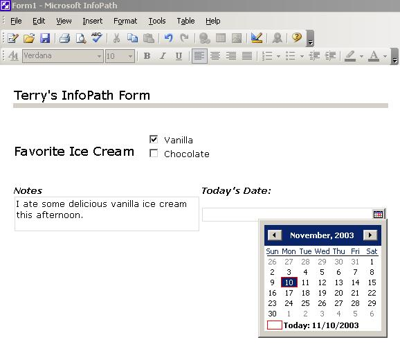
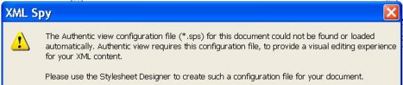

Information Research, Vol. 9 No. 2, January, 2004


Information Research, Vol. 9 No. 2, January, 2004 | ||||
|
|
|||
From simple containers to fundamental structuresFrom static presentation: Since the original purpose of the HyperText Markup Language (HTML) was presentation, user interaction was limited to a small number of elements, such as buttons and text fields. The <FORM/> element was merely a container for various controls (e.g., checkboxes, radio buttons, etc.). Users modified the controls and then submitted the form for processing. To foundations of interactivity: Increasing the sophistication of Web presentation usually means increasing its interactivity. Responsive Web content is generally considered as more interesting, or at least "stickier" (i.e., readers linger longer, thereby providing a strong economic incentive for increasing Web-site interactivity). Potentially, Web presentation can exhibit "intelligence" as Web servers analyse user input and choices, and then respond with customized content. These are the dynamics that shift focus to the <FORM/> element that hosts the Web widgets of interactivity. By Autumn 2003, forms emerge as the dominant structural element for Web presentations, as well as the doorway of Extensible Markup Language (XML) information into organizations:
Why is the evolution of forms significant?Information can be structured and validated at the periphery of an organization. Incoming information is thereby already groomed and ready to be shredded (i.e., individual fields of the incoming XML document are broken out) and submitted to the appropriate applications (read: databases, spreadsheets, etc). Reward goes to practice that emphasizes re-use of information and reduces the inefficiencies of keyboarding information more than once. Show me an example:The following InfoPath form features rich controls such as a date picker, radio boxes and a text field for anecdotal input.

This form produces native XML ready for immediate processing (This example has been edited to reduce markup clutter). <?xml version="1.0" encoding="UTF-8"?> <my:field1>true</my:field1> <my:field2>false</my:field2> <my:field4>I ate some delicious vanilla ice cream this afternoon.</my:field4> <my:field6>2003-11-10</my:field6> </my:myFields> What to do next: Process this file by using an XPath query to focus on the contents of "field4" and send it to the memo field of a database; use another XPath query to send "field6" to the date field of a database, etc. Emerging Technologies and Applications

Other Commercial (and more costly) Applications
Last Word and A Caution:The essence of XML is the separation of content from the contingencies of a particular presentation. Consider the following example created with the InfoPath form above. Any further processing of this XML would have to remove the <font> and <strong> tags which were created in the word processor-like environment and embedded in the XML. (This fragment has not been edited to remove the clutter of markup.) <my:field4>Grant and Brenda <font xmlns="http://www.w3.org/1999/xhtml" size="4"> <strong>love</strong></font> <font xmlns="http://www.w3.org/1999/xhtml" size="3">vanilla ice cream.</font></my:field4> Note for the folks who don't appreciate the significance of this example: If you're passing XML back and forth between applications, you don't want one person's particular style choices to ride around with the content. Oops! Date: December 2003 | |||
For further information:
| |||
How to cite this paper:
|
Contents |
|
Home |